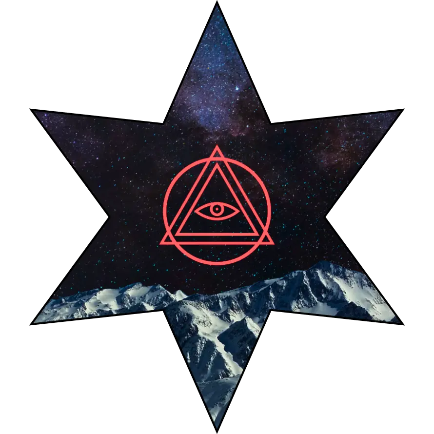

Cozmic Artifactz
This is my exploration of how to design interaction and display information within a webpage layout. I like snowboarding, and cosmic occultism is what inspired this work. This was my first experience with interactive prototyping in Figma.